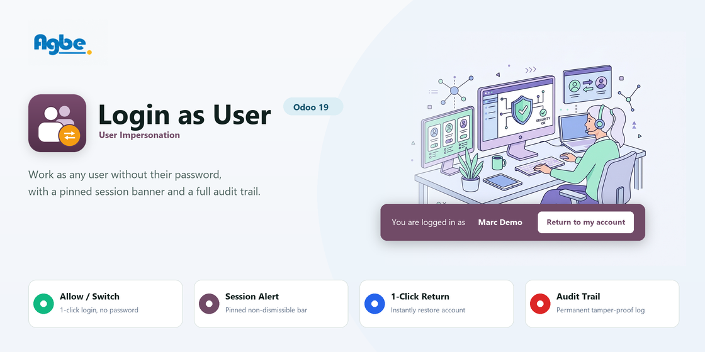

Login as User — User ImpersonationContinue your session inside another user's account without logging out and without knowing their password, with a pinned session banner and a complete audit trail — for Odoo 19. |
Version 19.0.1.0.2 · License LGPL-3 · Depends on base, web, mail · Core files modified 0
Why this exists
Every administrator and support engineer knows the frustration: an employee reports "I can't validate this delivery order" or "this menu has vanished", but everything looks fine from an admin account. Asking for the user's password breaches security policies; resetting their password interrupts their work. Core Odoo provides no built-in way to impersonate another user. This module solves that cleanly, safely, and transparently.
Core Capabilities
Switch into any user's session in one click, see exactly what they see, and return back instantly — with total accountability on record.
Log in to any user account with a single button click from their user profile. No credential sharing and no password resets.
Session SwitchSession swaps on the server and reloads directly into their workspace.
You operate under their record rules, allowed companies, access rights, and language — not yours, and not the two combined.
Real ReplicationReplicate bugs under the exact conditions the employee experiences.
A prominent bar stays pinned to the bottom of the screen throughout the session. Non-dismissible so nobody forgets whose account they are in.
One-Click ReturnIncludes a button to safely restore your administrator session instantly.
Every impersonation is logged: who did it, whose account was entered, remote IP address, start/end timestamps, and duration.
Tamper-ProofCannot be created, modified, or deleted from the interface by anyone.
Zero Passwords Shared · Strict Server Guards · 100% Audited & Reversible
Security Architecture
Impersonation is downward-only. The server strictly forbids privilege escalation and unsafe states at both the UI and RPC controller levels:
| ✖ |
No Privilege Climbing
A user cannot log in as anyone holding more rights than themselves. A support agent without administration rights cannot reach Settings by impersonating a system administrator. |
| ✖ |
System Superuser (OdooBot) Protected
The system superuser ( |
| ✖ |
No Nested Impersonations
A second impersonation from inside an active one is strictly blocked. You must return to your own account before switching to another user, keeping audit chains simple and deterministic. |
| ✖ |
Archived, Public & Self Impersonations Blocked
Logging in as yourself, as archived users, or as the public website user is rejected immediately by server-side guards. |
Quick start
Exactly what to click, in order.
STEP 1 · Settings › Users & Companies › Users
Open the user record you need to assist or troubleshoot. The Log in as button is located right in the form header.
Users › Marc Demo
Internal User · Sales / User · Inventory / User
STEP 2 · Safety confirmation
A clear confirmation prompt reminds you that you will see Odoo through their account and everything you do will be audited.
Confirmation
You are about to continue in this user's account. You will see Odoo exactly as they see it, and everything you do will be recorded under their name until you return to your own account.
STEP 3 · Active Impersonation
The page reloads directly into the target user's workspace. A prominent purple banner remains pinned at the bottom across all views.
| 🕵 You are logged in as Marc Demo | Return to my account |
STEP 4 · One-Click Return
Press Return to my account at any time. The session token is reissued, the audit record is closed with the exact end time, and you are right back in your admin account.
Returned to Administrator account · Session closed cleanly · No cookies leaked
STEP 5 · Settings › Users & Companies › Impersonation Log
A dedicated audit menu lists all sessions with search, group-by (impersonator, target, date), and active session filters.
Impersonation Log
| Started | Impersonator | Target User | Ended | Duration |
|---|---|---|---|---|
| Today 11:20 | Mitchell Admin | Marc Demo | Today 11:34 | 14 min |
| Yesterday 16:05 | Support Lead | Anita Oliver | Yesterday 16:18 | 13 min |
Zero Disturbance
When an impersonation starts, an internal note is recorded on the target user's contact record (chatter) for traceability. Crucially, it is posted with empty recipient lists — meaning the target user receives no e-mails, no inbox pings, and no unread notifications. Support can investigate issues without causing customer or employee confusion.
Mitchell Admin posted an internal note · Just now
Mitchell Admin logged in as this user.
Under the hood
The session token is recomputed against the new user directly using Odoo's native token machinery, guaranteeing the impersonated session is as valid as a real login, and no more.
The actual session ID is never written to the database. Only a cryptographic SHA-256 fingerprint is stored in the audit log, preventing credential exposure.
Even when impersonating a portal or restricted user with no rights on res.users, the return route works smoothly without ACL permission errors or getting trapped.
No monkey patching or brittle overrides of core Odoo files. Uses standard Odoo 19 extension hooks (main_components registry and clean view inheritance).
License & Terms
This module is free software published by AGBE Technologies (agbeindia.com) under the GNU Lesser General Public License v3 (LGPLv3). Anyone is free to download, use, and modify this module.
See README.md in the module for full developer notes, security explanations, and test instructions.